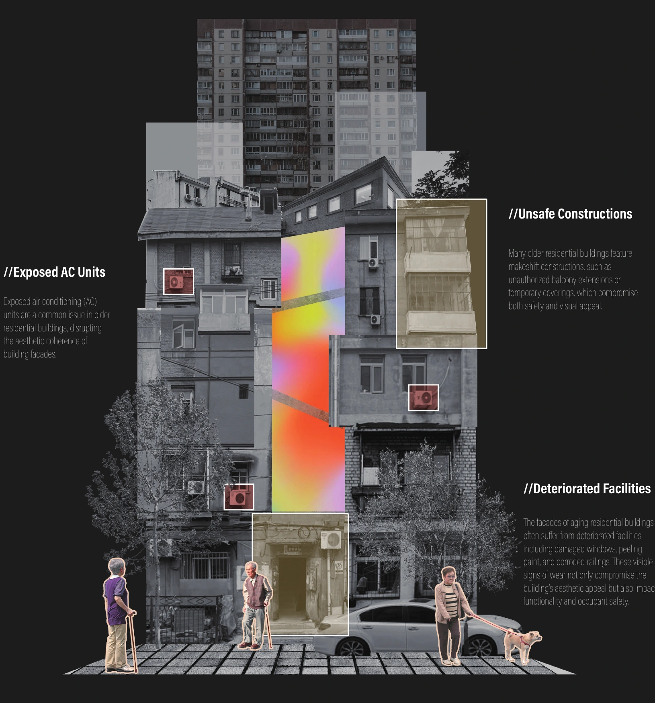
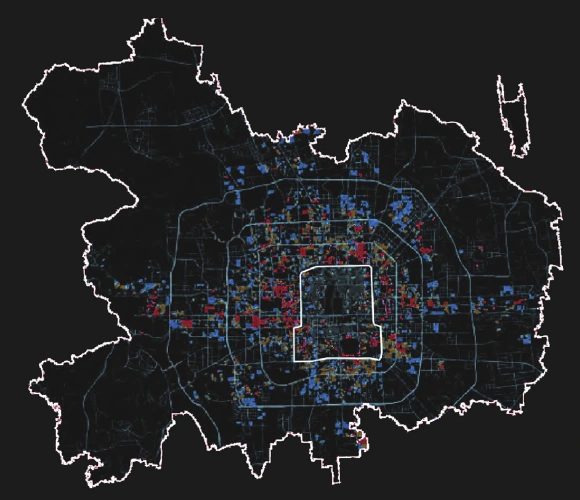
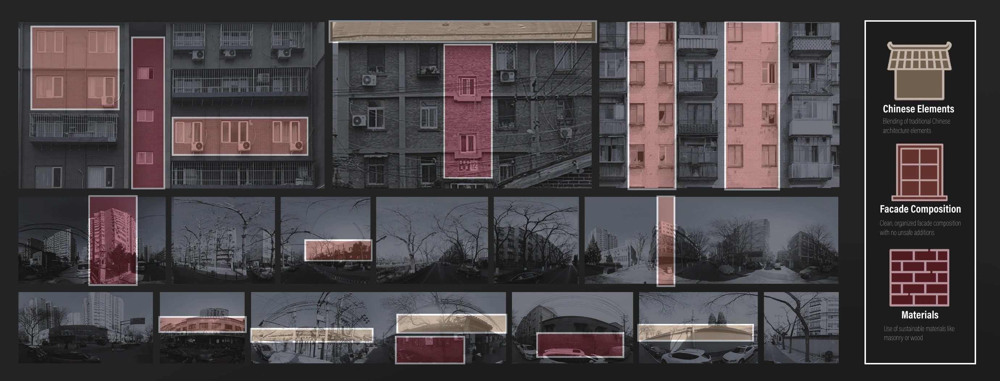
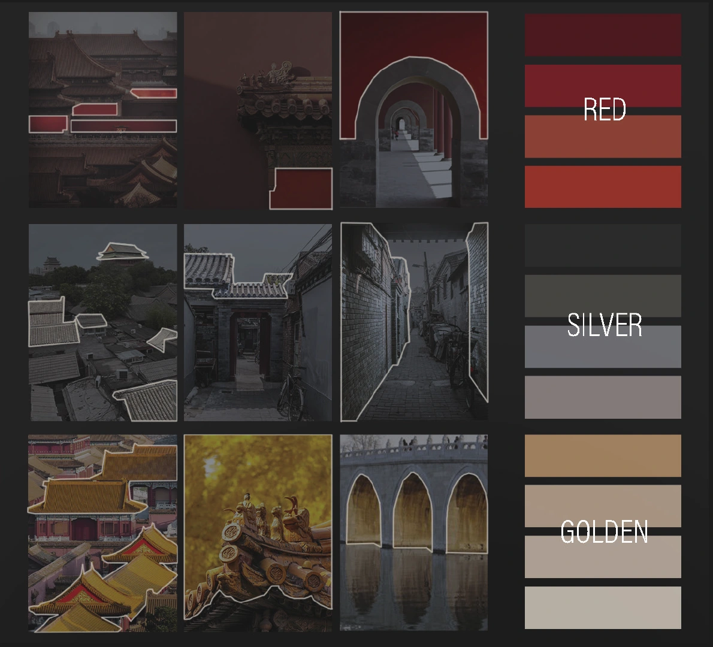
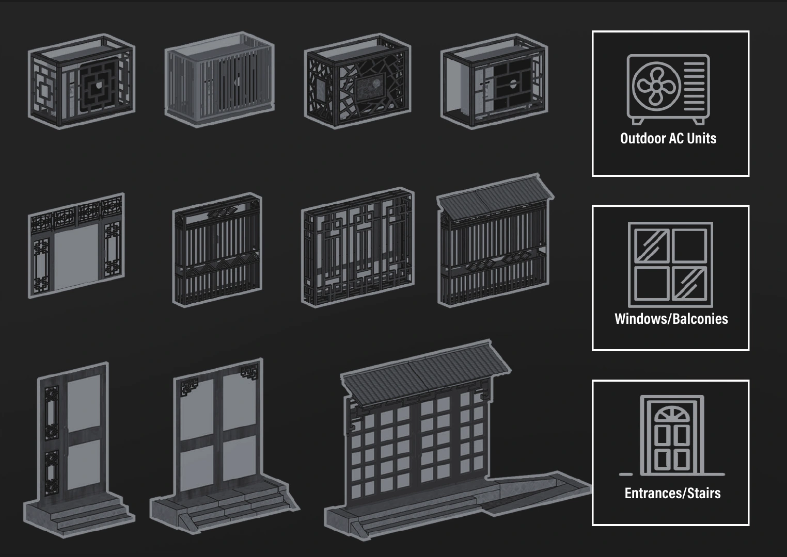
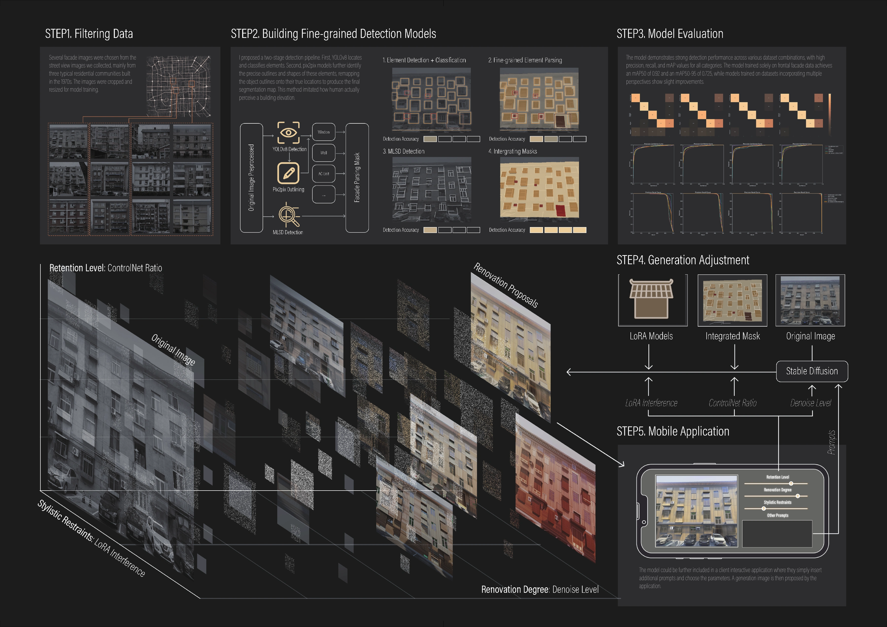
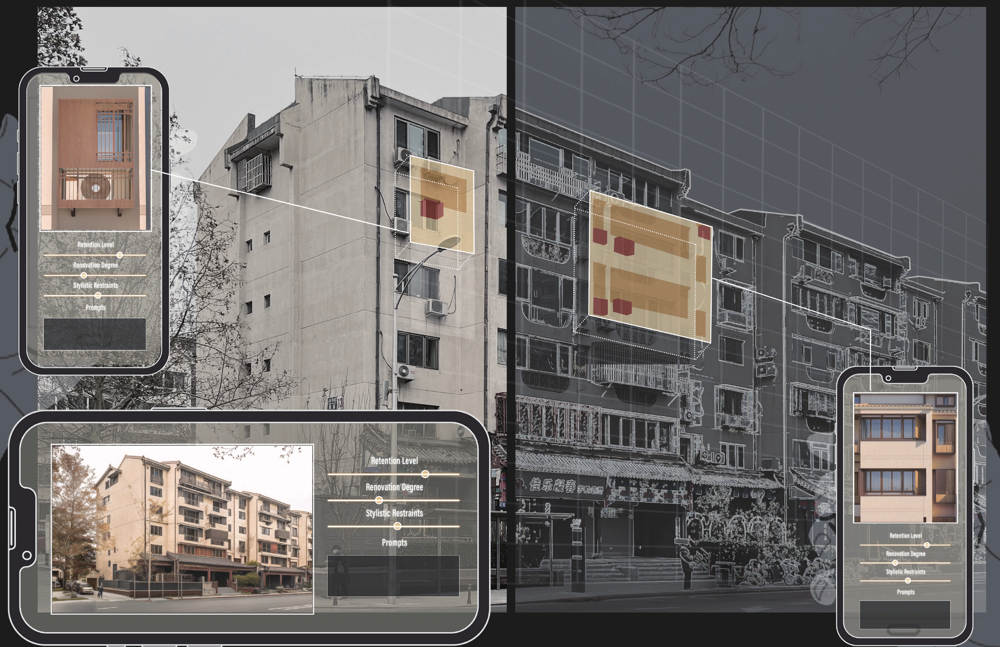

RENOVATE IT YOURSELF!
Generative-AI-based Housing Renovation Experiment
This project focuses on urban regeneration through collaborative designing method based on deep-learning models and generative AI. With the gradual advancement of urban renewal and the renovation of aging residential neighborhoods in China, the further transformation of facades in a large number of old residential buildings warrants significant research attention. To address this issue, this study proposes a research approach based on computer vision for the identification of elements in aging residential building facades and generative design methods.
Old Residential Communities in Beijing


Beijing's urban landscape features numerous old residential areas built between the 1950s and 1990s. Over 3,000 such communities, covering approximately 275 million square meters and housing about 2.35 million households, were constructed in the central urban area before 2000. These communities face building deterioration, outdated facilities, and environmental degradation, necessitating urgent renovation. Renovating these old residential areas is a key task in Beijing's urban renewal, significantly impacting residents' quality of life and the city's image.
Training Generative Model for Stylized Renovation
Building Facade Dataset — Feature Extraction

Renovation Stylistic Restraints
To achieve control over the generated facade building style, the study utilized the Low-Rank Adaptation model to fine-tune the pre-trained Stable Diffusion model. Parts of collected street view images are built into three main models representing three main features we wish to show in the generated images.
Color Analysis of Beijing Urban Environment

Facade Element Dataset

Pre-designed Elements for Inpaint
Given that the existing Stable Diffusion large model cannot generate renderings that meet expectations or include elements such as "air conditioning units", this study leverages the LoRA plugin, which can generate specific objects. Datasets for elements in specific styles was created, and based on this, a LoRA model was trained to guide the local redrawing process.
Facade Generation

Renovate it yourself!

Participatory designing could be achieved once the model and the application is put to use by the residential communities. Local residents could pull out their phones, take a picture of their building and let their imagination do the work. This could truly make urban renovation a collaborative and inclusive process.